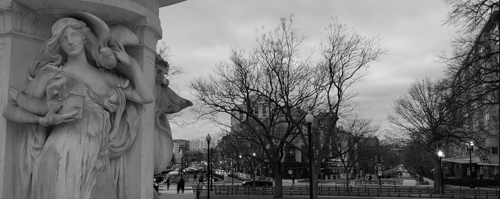
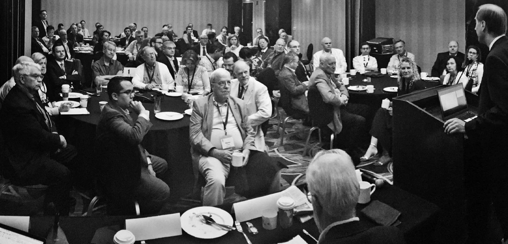
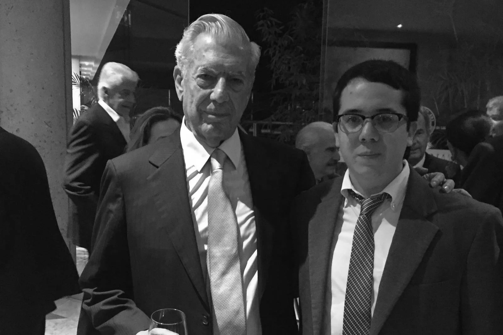

Me and a tank on a beach.

“Let us resolve tonight that young Americans will always see those Potomac lights; that they will always find there a city of hope in a country that is free. And let us resolve they will say of our day and our generation that we did keep faith with our God, that we did act worthy of ourselves; that we did protect and pass on lovingly that shining city on a hill.”
Ronald Reagan · "A Vision for America" (1980)
I'm a defense acquisitions professional living in Washington, D.C., with previous experience working at public relations firms and free-market think-tanks at home and in Latin America.
Outside of work, I write about acquisition, military innovation, geopolitics, and the historical roots of liberty in the Americas. My writing has appeared in outlets including Forbes, Fox News, The Hill, Seapower Magazine, and U.S. Naval Institute Proceedings.
I have a B.A. in International Affairs from the George Washington University and earned an M.A. in History at Georgetown.
I was born in Guayaquil, Ecuador, and have called the D.C. area home since 1993.
A selected list of my writing, from 2014 until present, is available here.


Attent in an audience.
With José Piñera.

With Mario Vargas Llosa.